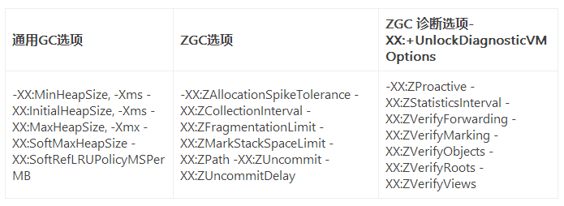
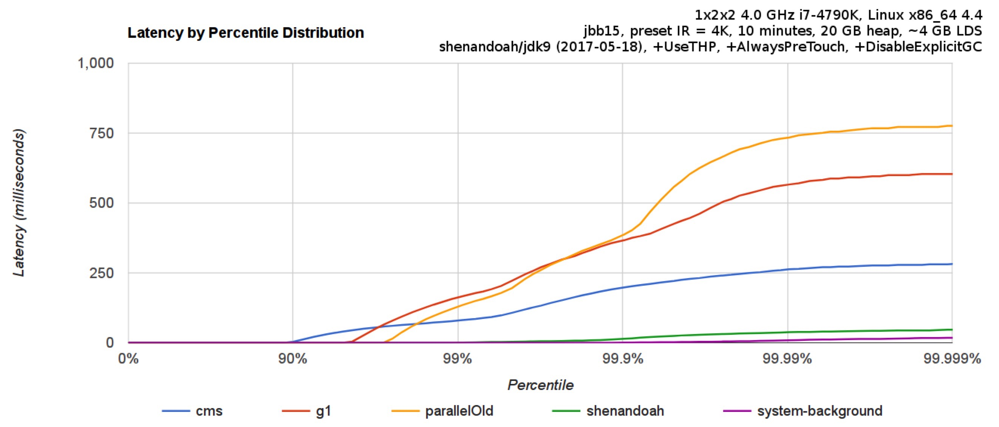

- 01 阅读此专栏的正确姿势.md.html
- 02 环境准备：千里之行，始于足下.md.html
- 03 常用性能指标：没有量化，就没有改进.md.html
- 04 JVM 基础知识：不积跬步，无以至千里.md.html
- 05 Java 字节码技术：不积细流，无以成江河.md.html
- 06 Java 类加载器：山不辞土，故能成其高.md.html
- 07 Java 内存模型：海不辞水，故能成其深.md.html
- 08 JVM 启动参数详解：博观而约取、厚积而薄发.md.html
- 09 JDK 内置命令行工具：工欲善其事，必先利其器.md.html
- 10 JDK 内置图形界面工具：海阔凭鱼跃，天高任鸟飞.md.html
- 11 JDWP 简介：十步杀一人，千里不留行.md.html
- 12 JMX 与相关工具：山高月小，水落石出.md.html
- 13 常见的 GC 算法（GC 的背景与原理）.md.html
- 14 常见的 GC 算法（ParallelCMSG1）.md.html
- 15 Java11 ZGC 和 Java12 Shenandoah 介绍：苟日新、日日新、又日新.md.html
- 16 Oracle GraalVM 介绍：会当凌绝顶、一览众山小.md.html
- 17 GC 日志解读与分析（基础配置）.md.html
- 18 GC 日志解读与分析（实例分析上篇）.md.html
- 19 GC 日志解读与分析（实例分析中篇）.md.html
- 20 GC 日志解读与分析（实例分析下篇）.md.html
- 21 GC 日志解读与分析（番外篇可视化工具）.md.html
- 22 JVM 的线程堆栈等数据分析：操千曲而后晓声、观千剑而后识器.md.html
- 23 内存分析与相关工具上篇（内存布局与分析工具）.md.html
- 24 内存分析与相关工具下篇（常见问题分析）.md.html
- 25 FastThread 相关的工具介绍：欲穷千里目，更上一层楼.md.html
- 26 面临复杂问题时的几个高级工具：它山之石，可以攻玉.md.html
- 27 JVM 问题排查分析上篇（调优经验）.md.html
- 28 JVM 问题排查分析下篇（案例实战）.md.html
- 29 GC 疑难情况问题排查与分析（上篇）.md.html
- 30 GC 疑难情况问题排查与分析（下篇）.md.html
- 31 JVM 相关的常见面试问题汇总：运筹策帷帐之中，决胜于千里之外.md.html
- 32 应对容器时代面临的挑战：长风破浪会有时、直挂云帆济沧海.md.html
15 Java11 ZGC 和 Java12 Shenandoah 介绍：苟日新、日日新、又日新
随着互联网的迅速发展和计算机硬件的迭代更新，越来越多的业务系统使用大内存。而且这些实时在线业务对响应时间比较敏感。比如需要实时获得响应消息的支付业务，如果 JVM 的某一次 GC 暂停时间达到 10 秒，显然会让客户的耐心耗尽。
还有一些对延迟特别敏感的系统，一般要求响应时间在 100ms 以内。例如高频交易系统，业务本身就有一些运算耗时，如果 GC 暂停时间超过一半（>50ms），那很可能就会让某些交易策略失效，从而达不到规定的性能指标。
在这样的背景下，GC 消耗的资源（如 CPU、内存）相对来说并不是那么重要，吞吐量稍微小一点是能接受的。因为在这类系统中，硬件资源一般都有很多冗余，而且还可以通过限频、分流、集群等措施将单机的吞吐限制在一定范围内。也就是说低延迟才是这些系统的核心非功能性需求。
如何让系统能够在高并发、高吞吐、大内存（如堆内存 64/128G+）的情况下，保持长期稳定运行，将 GC 停顿延迟降低到 10ms 级别，就成为一个非常值得思考的问题，也是业界迫切需要解决的难题。
Pauseless GC 基本情况
早在 2005 年，Azul Systems 公司的三位工程师就给出了非常棒的解决方案，在论文《无停顿 GC 算法（The Pauseless GC Algorithm）》中提出了 Pauseless GC 设计。他们发现，低延迟的秘诀主要在于两点：
- 使用读屏障
- 使用增量并发垃圾回收
论文提出后，经历了 10 多年的研究和开发，JDK 11 正式引入 ZGC 垃圾收集器，基本上就是按照这篇论文中提出的算法和思路来实现的。当然，JDK 12 中引入的 Shenandoah GC（读作“谢南多厄”）也是类似的设计思想。
之前的各种 GC 算法实现，都是在业务线程执行的代码中强制增加“写屏障（write barrier）”，以控制对堆内存的修改，同时也可以跟踪堆内存中跨区的引用。这种实现方法使得基于分代/分区的 GC 算法具有非常卓越的性能，被广泛用于各种产品级 JVM 中。换句话说，以前在生产环境中很少有人使用“读屏障（read barrier）”，主要原因是理论研究和实现都不成熟，也没有优势。
好的 GC 算法肯定要保证内存清理的速度要比内存分配的速度快，除此之外，Pauseless GC 并没有规定哪个阶段是必须快速完成的。每个阶段都不必跟业务线程争抢 CPU 资源，没有哪个阶段需要抢在后面的业务操作之前必须完成。
Pauseless GC 算法主要分为三个阶段：标记（Mark）、重定位（Relocate）和重映射（Remap）。每个阶段都是完全并行的，而且每个阶段都是和业务线程并发执行的。
JDK 11 下载与安装
JDK 11 是 JDK 8 之后的长期维护版本（LTS 版本，Long Term Support），可以从官网下载和安装。
Oracle 官网：
https://www.oracle.com/technetwork/java/javase/downloads/index.html
也可以直接从我的百度云盘，链接：
https://pan.baidu.com/s/1SwEcrPI3srrwEKtb-y5dfQ#list/path=%2F
安装完成后，按照第一课中提供的方案配置 Java_HOME、PATH 环境变量，并验证是否安装成功：
$ java -version
java version "11.0.5" 2019-10-15 LTS
Java(TM) SE Runtime Environment 18.9 (build 11.0.5+10-LTS)
Java HotSpot(TM) 64-Bit Server VM 18.9 (build 11.0.5+10-LTS, mixed mode)
有类似的输出就表示安装成功，可以使用了。
JDK 11 在开发时还提供了一些方便的改进，例如之前的 JDK 版本中如果要编译和执行 Java 文件，需要有两步操作：
$ javac Hello.java // 先编译为 class 格式
$ java Hello // 再执行 class
而在 JDK 11 中只需要一个步骤即可：
$ java Hello.java // 检测到 Java 源文件后缀则会自动执行编译
ZGC 简介：聚焦于低延迟的垃圾收集器
JDK 11 从 JDK 9 和 JDK 10 版本中继承了很多优秀的特性，比如 JDK 9 引入的模块化功能和 jhsdb 调试工具等等。
如果要在 JDK 11 中选择一个最令人激动的特性，那就非 ZGC 莫属了。
ZGC 即 Z Garbage Collector（Z 垃圾收集器，Z 有 Zero 的意思，主要作者是 Oracle 的 Per Liden），这是一款低停顿、高并发，基于小堆块（region）、不分代的增量压缩式垃圾收集器，平均 GC 耗时不到 2 毫秒，最坏情况下的暂停时间也不超过 10 毫秒。
注意：
ZGC 垃圾收集器从 JDK11 开始支持，但截止目前（2020 年 2 月），仅支持 x64 平台的 Linux 操作系统。
在 Linux x64 下的 JDK 11 以上版本中可以使用 ZGC 垃圾收集器。
笔者翻阅了一下移植版本的开发进展情况，发现 macOS 系统上的开发已经完成，但还没有集成到 JDK 中；按官方计划，会在 JDK 14 中集成进来（当前的日常 JDK 14 早期 build 版本中也没有加入）。
JDK 13 是 2019 年 9 月份发布的，按照半年发布一次的约定，JDK 14 大约会在 2020 年 3 月份发布。
如果在 macOS 上安装的 JDK 11 中使用 ZGC，则会报错：
$ java -XX:+UnlockExperimentalVMOptions -XX:+UseZGC Hello
Error occurred during initialization of VM
Option -XX:+UseZGC not supported
在 Linux 系统中，JDK 11 安装完成后，可以通过如下参数启用 ZGC：
-XX:+UnlockExperimentalVMOptions -XX:+UseZGC -Xmx16g
嗯，这里还指定了堆内存的大小（这个参数比较重要）。前面的参数 -XX:+UnlockExperimentalVMOptions，根据字面意思理解——解锁实验性质的 VM 选项。
ZGC 特性简介
ZGC 最主要的特点包括：
- GC 最大停顿时间不超过 10ms
- 堆内存支持范围广，小至几百 MB 的堆空间，大至 4TB 的超大堆内存（JDK 13 升至 16TB）
- 与 G1 相比，应用吞吐量下降不超过 15%
- 当前只支持 Linux/x64 位平台，预期 JDK14 后支持 macOS 和 Windows 系统
有的地方说“GC 暂停”，有的地方说“GC 停顿”，其实两者是一个意思，但为了表述的流畅，所以会使用不同的词语。更细致的辨别，可以认为暂停是业务线程的暂停，停顿是指应用程序层面的停顿。
官方介绍说停顿时间在 10ms 以下，其实这个数据是非常保守的值。
根据基准测试（见参考材料里的 PDF 链接），在 128G 的大堆下，最大停顿时间只有 1.68ms，远远低于 10ms；和 G1 算法比起来相比，改进非常明显。
请看下图：
左边的图是线性坐标，右边是指数坐标。
可以看到，不管是平均值、95 线、99 线还是最大暂停时间，ZGC 都优胜于 G1 和并行 GC 算法。
根据我们在生产环境的监控数据来看（16G~64G 堆内存），每次暂停都不超过 3ms。
比如下图是一个低延迟网关系统的监控信息，几十 GB 的堆内存环境中，ZGC 表现得毫无压力，暂停时间非常稳定。
像 G1 和 ZGC 之类的现代 GC 算法，只要空闲的堆内存足够多，基本上不触发 FullGC。
所以很多时候，只要条件允许，加内存才是最有效的解决办法。
既然低延迟是 ZGC 的核心看点，而 JVM 低延迟的关键是 GC 暂停时间，那么我们来看看有哪些方法可以减少 GC 暂停时间：
- 使用多线程“并行”清理堆内存，充分利用多核 CPU 的资源；
- 使用“分阶段”的方式运行 GC 任务，把暂停时间打散；
- 使用“增量”方式进行处理，每次 GC 只处理一部分堆内存（小堆块，region）；
- 让 GC 与业务线程“并发”执行，例如增加并发标记，并发清除等阶段，从而把暂停时间控制在非常短的范围内（目前来说还是必须使用少量的 STW 暂停，比如根对象的扫描，最终标记等阶段）；
- 完全不进行堆内存整理，比如 Golang 的 GC 就采用这种方式（题外话）。
上一节课我们介绍的是 GC 基本算法，可以看到“标记清除”算法就是不进行内存整理，所以会产生内存空间碎片。“复制清除”和“标记整理”算法则会进行内存空间整理，以消除内存碎片，但为了让堆结构不再变化，这个整理的过程需要将用户线程全部暂停，也就是我们所说的 STW 现象。只有在 STW 结束之后，程序才能继续运行。这个暂停时间一般是几百毫秒，多的可能到几秒，甚至几十秒。对于现在的实时应用系统和低延迟业务系统来说，这是一个大坑。
到了 G1，就把堆内存分成很多“小堆块”（region，为了不和区块链冲突，我们就不叫它“小区块”了）。就像 ConcurrentHashmap 将 hash 表分成很多段（segment）、来支持更小粒度的锁以提升性能一样，更小粒度的内存块划分，也就允许增量垃圾收集的实现，意味着每次暂停的时间更短。
当然实际经验证明，G1 设置的最大暂停时间（-XX:MaxGCPauseMillis）这个预估值十分不精确。甚至在恶劣情况下还会退化，出现长时间的 Full GC（JDK 10 之前是单线程串行回收，之后是多线程执行）。
ZGC，以及后面将要介绍的 Shenandoah GC，还有 Azul 公司的 C4 垃圾收集器处理方法都类似，它们专注于减少停顿时间，同时也会整理堆内存。
和前面介绍的其他 GC 算法不同，ZGC 几乎在所有地方都是（与应用线程）并发执行的，只有初始标记阶段会有 STW 暂停。所以 ZGC 的停顿时间基本上就消耗在了初始标记上，这部分时间非常短，而且这个暂停时间不会随着堆内存和存活对象的数量增加而递增。
而内存整理，也就是重定位的过程是并发执行的，用到了我们前面说到的“读屏障”。读屏障是 ZGC 的关键法宝，具体实现原理将继续阅读下面的部分。
注：Azul System 是一家提供高性能商业化 JVM/GC 的公司，无停顿 GC 概念的引领者，著名的有 Azul VM 的 Pauseless GC，以及 Zing VM 中的 C4 GC。
ZGC 的原理
ZCG 的 GC 周期如图所示：
每个 GC 周期分为 6 个小阶段：
- 暂停—标记开始阶段：第一次暂停，标记根对象集合指向的对象；
- 并发标记/重映射阶段：遍历对象图结构，标记对象；
- 暂停—标记结束阶段：第二次暂停，同步点，弱根对象清理；
- 并发准备重定位阶段：引用处理、弱对象清理等；
- 暂停—重定位开始阶段：第三次暂停，根对象指向重定向集合；
- 并发重定位阶段：重定向集合中的对象重定向。
这 6 个阶段在绝大部分时间都是并发执行的，因此对应用运行的 GC 停顿影响很小。
ZGC 采用了并发的设计方式，这个实现是非常有技术含量的：
- 需要把一个对象拷贝到另一个地址，这时另外一个线程可能会读取或者修改原来的这个老对象；
- 即使拷贝成功，在堆中依然会有很多引用指向老的地址，那么就需要将这些引用更新为新地址。
为了解决这些问题，ZGC 引入了两项关键技术：“着色指针”和“读屏障”。
着色指针
ZGC 使用着色指针来标记所处的 GC 阶段。
着色指针是从 64 位的指针中，挪用了几位出来标识表示 Marked0、Marked1、Remapped、Finalizable。所以不支持 32 位系统，也不支持指针压缩技术，堆内存的上限是 4TB。
从这些标记上就可以知道对象目前的状态，判断是不是可以执行清理压缩之类的操作。
读屏障
对于 GC 线程与用户线程并发执行时，业务线程修改对象的操作可能带来的不一致问题，ZGC 使用的是读屏障，这点与其他 GC 使用写屏障不同。
有读屏障在，就可以留待之后的其他阶段，根据指针颜色快速的处理。并且不是所有的读操作都需要屏障，例如下面只有第一种语句（加载指针时）需要读屏障，后面三种都不需要，又或者是操作原生类型的时候也不需要。
著名的 JVM 技术专家 RednaxelaFX 提到：ZGC 的 Load Value Barrier，与 Red Hat 的 Shenandoah 收集器使用的屏障不同，后者选择了 70 年代比较基础的 Brooks Pointer，而 ZGC 则是在古老的 Baker barrier 基础上增加了 self healing 特性。
可以把“读屏障”理解为一段代码，或者是一个指令，后面挂着对应的处理函数。
比如下面的代码：
Object a = obj.x;
Object b = obj.x;
两行 load 操作对应的代码都插入了读屏障，但 ZGC 在第一个读屏障触发之后，不但将 a 的值更新为最新的，通过 self healing 机制使得 obj.x 的指针也会被修正，第二个读屏障再触发时就直接进入 FastPath，基本上没有什么性能损耗了；而 Shenandoah 则不会修正 obj.x 的值，所以第二个读屏障又要走一次 SlowPath。
计算机科学领域的任何问题都可以通过增加一个间接的中间层来解决。
着色指针和读屏障，相当于在内存管理和应用程序代码之间加了一个中间层，通过这个中间层就可以实现更多的功能。但是也可以看到算法本身有一定的开销，也带来了很多复杂性。
ZGC 的参数介绍
除了上面提到的 -XX:+UnlockExperimentalVMOptions -XX:+UseZGC 参数可以用来启用 ZGC 以外，ZGC 可用的参数见下表：

一些常用的参数介绍：
-XX:ZCollectionInterval：固定时间间隔进行 GC，默认值为0。-XX:ZAllocationSpikeTolerance：内存分配速率预估的一个修正因子，默认值为 2，一般不需要更改。-XX:ZProactive：是否启用主动回收策略，默认值为 true，建议开启。-XX:ZUncommit：将不再使用的内存还给 OS，JDK 13 以后可以使用；JVM 会让内存不会降到 Xms 以下，所以如果 Xmx 和 Xms 配置一样这个参数就会失效。-XX:+UseLargePages -XX:ZPath：使用大内存页。Large Pages 在 Linux 称为 Huge Pages，配置 ZGC 使用 Huge Pages 可以获得更好的性能（吞吐量、延迟、启动时间）。配置 Huge Pages 时，一般配合 ZPath 使用。配置方法可以见：https://wiki.openjdk.java.net/display/zgc/Main。-XX:UseNUMA：启用 NUMA 支持（挂载很多 CPU，每个 CPU 指定一部分内存条的系统）。ZGC 默认开启 NUMA 支持，意味着在分配堆内存时，会尽量使用 NUMA-local 的内存。开启和关闭可以使用-XX:+UseNUMA或者-XX:-UseNUMA。-XX:ZFragmentationLimit：根据当前 region 已大于 ZFragmentationLimit，超过则回收，默认为 25。-XX:ZStatisticsInterval：设置打印 ZStat 统计数据（CPU、内存等 log）的间隔。
此外还有前面提过的并发线程数参数 -XX:ConcGCThreads=<number>，这个参数对于并发执行的 GC 策略都很重要，需要根据 CPU 核心数考虑，配置太多导致线程切换消耗太大，配置太少导致回收垃圾速度跟不上系统使用的速度。
Java 13 对 ZGC 的改进
Java 11 中的 ZGC，并没有像这个版本中的 G1 一样，主动将未使用的内存释放给操作系统。
也就是说内存回收以后，没有还给操作系统，依然是自己在管理。
对于大多数应用程序来说，CPU 和内存都属于有限的紧缺资源，这样就不利于资源的最大化利用（对于单个系统只部署一个 Java 应用，独享所有内存的部署，特别是 Xmx 和 Xms 一样大的时候，其实对系统影响不大）。
在 Java 13 中，ZGC 将会释放掉被标识为长时间未使用的页面，还给操作系统，这样就可以被其他进程使用（考虑多个批处理作业系统轮流执行等场景）。同时将这些未使用的内存还给操作系统不会导致堆大小缩小到参数设置的初始值以下，如果将最小和最大堆内存设置为相同的值，则不会释放任何内存给操作系统。
Java 13 中对 ZGC 的改进，主要体现在下面几点：
- 可以释放不使用的内存给操作系统
- 最大堆内存支持从 4TB 增加到 16TB
- 添加参数
-XX:SoftMaxHeapSize来软限制堆大小
注意，SoftMaxHeapSize 是指 GC 跟原来的 Xmx 和 Xms 都不相同，默认情况下 GC 会尽量让堆内存不超过这个大小，但是也不能排除在特定情况下超过这个限制，可以看做是变得更有弹性了。主要用在下面几种情况：
- 当希望在一般情况下降低堆内存占用，同时保持应对堆空间临时增加的能力，
- 亦或想保留充足内存空间，以能够应对内存分配，而不会因为内存分配意外增加而陷入分配停滞状态。
注意，不要将 SoftMaxHeapSize 设置为大于 Xmx 的值，因为如果设置了 Xmx，会以 Xmx 为最大值，即永远不会到达SoftMaxHeapSize。
在 Java 13 中，ZGC 内存释放给操作系统特性是默认开启的，可以使用参数 -XX:-ZUncommit 来关闭。也可以使用参数 -XX:ZUncommitDelay=<seconds> 来配置延迟一定时间后再释放内存，默认为 300 秒。
Shenandoah GC 简介
Java 12 正式发布于 2019 年 3 月 19 日，这个版本引入了一款新的垃圾收集器：Shenandoah（读作“谢南多厄”，美国地名），WIKI 请参考：
作为 ZGC 的另一个选择，Shenandoah 是一款超低延迟垃圾收集器（Ultra-Low-Pause-Time Garbage Collector），其设计目标是管理大型的多核服务器上,超大型的堆内存。GC 线程与应用线程并发执行、使得虚拟机的停顿时间非常短暂。
Shenandoah 的特点
Shenandoah GC 立项比 ZGC 更早，Red Hat 早在 2014 年就宣布启动开展此项目，实现 JVM 上 GC 低延迟的需求。
设计为 GC 线程与应用线程并发执行的方式，通过实现垃圾回收过程的并发处理，改善停顿时间，使得 GC 执行线程能够在业务处理线程运行过程中进行堆压缩、标记和整理，从而消除了绝大部分的暂停时间。
Shenandoah 团队对外宣称 Shenandoah GC 的暂停时间与堆大小无关，无论是 200 MB 还是 200 GB 的堆内存，都可以保障具有很低的暂停时间（注意：并不像 ZGC 那样保证暂停时间在 10ms 以内）。
Shenandoah GC 原理介绍
Shenandoah GC 的原理，跟 ZGC 非常类似。
部分日志内容如下：
GC(3) Pause Init Mark 0.771ms
GC(3) Concurrent marking 76480M->77212M(102400M) 633.213ms
GC(3) Pause Final Mark 1.821ms
GC(3) Concurrent cleanup 77224M->66592M(102400M) 3.112ms
GC(3) Concurrent evacuation 66592M->75640M(102400M) 405.312ms
GC(3) Pause Init Update Refs 0.084ms
GC(3) Concurrent update references 75700M->76424M(102400M) 354.341ms
GC(3) Pause Final Update Refs 0.409ms
GC(3) Concurrent cleanup 76244M->56620M(102400M) 12.242ms
对应工作周期如下：
- 初始标记阶段（Init Mark）：为堆和应用程序准备并发标记，然后扫描根对象集。这是 GC 周期的第一次暂停，持续时间取决于根对象集的大小。因为根对象集很小，所以速度很快，暂停非常短。
- 并发标记阶段（Concurrent Mark）：并发标记遍历堆，并跟踪可到达的对象。该阶段与应用程序同时运行，其持续时间取决于存活对象的数量以及堆中对象图的结构。由于应用程序可以在此阶段自由分配新数据，因此在并发标记期间堆占用率会上升。
- 最终标记阶段（Final Mark）：通过排空所有等待中的标记/更新队列，并重新扫描根对象集来完成并发标记。这是 GC 周期中的第二次暂停，这里最主要的时间消耗在排空队列并扫描根对象集合。
- 并发清理阶段（Concurrent Cleanup）：并发清除会回收即时的垃圾区域，即在并发标记之后检测到的没有活动对象的区域。
- 并发转移阶段（Concurrent Evacuation）：并发转移将对象从各个不同区域复制到指定区域。这是与其他 OpenJDK GC 的主要区别。此阶段与应用程序还是可以同时运行，持续时间取决于要复制的集合大小，不会导致程序暂停。
- 初始引用更新阶段（Init Update Refs）：本阶段确保所有 GC 和应用程序线程均已完成转移，然后为下一阶段 GC 做准备。这是周期中的第三次暂停，是所有暂停中最短的一次。
- 并发引用更新阶段（Concurrent Update References）：遍历堆，并发更新引用，并将引用更新为在并发转移期间移动的对象。这是与其他 OpenJDK GC 的主要区别。它的持续时间取决于堆中对象的数量，而不在乎对象图结构，因为它会线性扫描堆。此阶段与应用程序同时运行。
- 最终引用更新阶段（Final Update Refs）：通过再次更新现有的根对象集合来完成更新引用阶段。这是 GC 周期中的最后一个暂停，其持续时间取决于根对象集的大小。
- 并发清理阶段（Concurrent cleanup）：回收现阶段没有引用的区域。
详细的原理，以及每一个步骤具体都发生了什么，可以参考 2019 北京 QCon 上开发组成员古政宇的演讲 PPT：
[《Shenandoah:Your Next Garbage Collector-古政宇》.pdf](https://gitee.com/kimmking/QConBeijing2019/raw/master/Java生态系统/Shenandoah：Your Next Garbage Collector-古政宇.pdf)
需要提醒，并非只有 GC 停顿会导致应用程序响应时间变长。 除了GC长时间停顿会导致系统响应变慢，其他诸如 消息队列延迟、网络延迟、计算逻辑过于复杂、以及外部服务的延时，操作提供的调度程序抖动等都可能导致响应变慢。
使用 Shenandoah 时需要全面了解系统运行情况，综合分析系统响应时间。下图是官方给出的各种 GC 工作负载对比：

可以看到，相对于 CMS、G1、Parallel GC，Shenandoah 在系统负载增加的情况下，延迟时间稳定在非常低的水平，而其他几种 GC 都会迅速上升。
常用参数介绍
推荐几个配置或调试 Shenandoah 的 JVM 参数：
-XX:+AlwaysPreTouch：使用所有可用的内存分页，减少系统运行停顿，为避免运行时性能损失。- 让
-Xmx等于-Xms：设置初始堆大小与最大值一致，可以减轻堆内存扩容带来的压力，与 AlwaysPreTouch 参数配合使用，在启动时申请所有内存，避免在使用中出现系统停顿。 -XX:+UseTransparentHugePages：能够大大提高大堆的性能。
启发式参数
启发式参数告知 Shenandoah GC何时开始GC处理，以及确定要归集的堆块。可以使用 -XX:ShenandoahGCHeuristics=<name> 来选择不同的启发模式，有些启发模式可以配置一些参数，帮助我们更好地使用 GC。可用的启发模式如下。
1. 自适应模式（adaptive）
此为默认参数，通过观察之前的一些 GC 周期，以便在堆耗尽之前尝试启动下一个 GC 周期。
-XX:ShenandoahInitFreeThreshold=#：触发“学习”集合的初始阈值-XX:ShenandoahMinFreeThreshold=#：启发式无条件触发GC的可用空间阈值-XX:ShenandoahAllocSpikeFactor=#：要保留多少堆来应对内存分配峰值-XX:ShenandoahGarbageThreshold=#：设置在将区域标记为收集之前需要包含的垃圾百分比
2. 静态模式（static）
根据堆使用率和内存分配压力决定是否启动 GC 周期。
-XX:ShenandoahFreeThreshold=#：设置空闲堆百分比阈值-XX:ShenandoahAllocationThreshold=#：设置内存分配量百分比阈值-XX:ShenandoahGarbageThreshold=#：设置小堆块标记为可回收的百分比阈值-XX:ShenandoahFreeThreshold=#：设置启动GC周期时的可用堆百分比阈值-XX:ShenandoahAllocationThreshold=#：设置从上一个GC周期到新的GC周期开始之前的内存分配百分比阈值-XX:ShenandoahGarbageThreshold=#：设置在将区域标记为收集之前需要包含的垃圾百分比阈值
3. 紧凑模式（compact）
只要有内存分配，就会连续运行 GC 回收，并在上一个周期结束后立即开始下一个周期。此模式通常会有吞吐量开销，但能提供最迅速的内存空间回收。
-XX:ConcGCThreads=#：设置并发 GC 线程数，可以减少并发 GC 线程的数量，以便为应用程序运行留出更多空间-XX:ShenandoahAllocationThreshold=#：设置从上一个 GC 周期到新的 GC 周期开始之前的内存分配百分比
4. 被动模式（passive）
内存一旦用完，则发生 STW，用于系统诊断和功能测试。
5. 积极模式（aggressive）
它将尽快在上一个 GC 周期完成时启动新的 GC 周期（类似于“紧凑型”），并且将全部的存活对象归集到一块，这会严重影响性能，但是可以被用来测试 GC 本身。
有时候启发式模式会在判断后把更新引用阶段和并发标记阶段合并。可以通过 -XX:ShenandoahUpdateRefsEarly=[on|off] 强制启用和禁用这个特性。
同时针对于内存分配失败时的策略，可以通过调节 ShenandoahPacing 和 ShenandoahDegeneratedGC 参数，对线程进行一定的调节控制。如果还是没有足够的内存，最坏的情况下可能会产生 Full GC，以使得系统有足够的内存不至于发生 OOM。
更多有关如何配置、调试 Shenandoah 的参数信息，请参阅 Shenandoah 官方 Wiki 页面。
各版本 JDK 对 Shenandoah 的集成情况
这张图展示了 Shenandoah GC 目前在各个 JDK 版本上的进展情况，可以看到 OpenJDK 12 和 13 上都可以用。
在 Red Hat Enterprise Linux、Fedora 系统中则可以在 JDK 8 和 JDK 11 版本上使用（肯定的，这两个 Linux 发行版都是 Red Hat 的，谁让这个 GC 也是 Red Hat 开发维护的呢）。
- 默认情况下，OpenJDK 12+ 发布版本通常包括 Shenandoah；
- Fedora 24+ 中 OpenJDK 8+ 发布版本包括 Shenandoah；
- RHEL 7.4+ 中 OpenJDK 8+ 发布版本中包括 Shenandoah 作为技术预览版；
- 基于 RHEL/Fedora 的发行版或其他使用它们包装的发行版也可能启用了 Shenandoah（CentOS、Oracle Linux、Amazon Linux 中也带了 Shenandoah）。
Java 11 版本中的 Epsilon GC
其实 Java 11 版本中还新引入了 Epsilon GC，可以通过参数 -XX:+UseEpsilonGC 开启。
Epsilon GC 的目标是只分配内存，不执行垃圾回收。神兽貔貅一般只吃不拉，不回收和释放内存，所以适合用来做性能分析，但无法用于生产环境，很少有人提及，大家有一个映像即可。
因为不回收，所以在程序执行过程中也就没有 GC 消耗，性能测试更准确！
GC 的使用总结
到目前为止，我们一共了解了 Java 目前支持的所有 GC 算法，一共有 7 类：
- 串行 GC（Serial GC）：单线程执行，应用需要暂停；
- 并行 GC（ParNew、Parallel Scavenge、Parallel Old）：多线程并行地执行垃圾回收，关注与高吞吐；
- CMS（Concurrent Mark-Sweep）：多线程并发标记和清除，关注与降低延迟；
- G1（G First）：通过划分多个内存区域做增量整理和回收，进一步降低延迟；
- ZGC（Z Garbage Collector）：通过着色指针和读屏障，实现几乎全部的并发执行，几毫秒级别的延迟，线性可扩展；
- Epsilon：实验性的 GC，供性能分析使用；
- Shenandoah：G1 的改进版本，跟 ZGC 类似。
从中可以看出 GC 算法和实现的演进路线：
- 串行 -> 并行：重复利用多核 CPU 的优势，大幅降低 GC 暂停时间，提升吞吐量。
- 并行 -> 并发：不只开多个 GC 线程并行回收，还将 GC 操作拆分为多个步骤，让很多繁重的任务和应用线程一起并发执行，减少了单次 GC 暂停持续的时间，这能有效降低业务系统的延迟。
- CMS -> G1：G1 可以说是在 CMS 基础上进行迭代和优化开发出来的。修正了 CMS 一些存在的问题，而且在 GC 思想上有了重大进步，也就是划分为多个小堆块进行增量回收，这样就更进一步地降低了单次 GC 暂停的时间。可以发现，随着硬件性能的提升，业界对延迟的需求也越来越迫切。
- G1 -> ZGC：ZGC 号称无停顿垃圾收集器，这又是一次极大的改进。ZGC 和 G1 有一些相似的地方，但是底层的算法和思想又有了全新的突破。 ZGC 把一部分 GC 工作，通过读屏障触发陷阱处理程序的方式，让业务线程也可以帮忙进行 GC。这样业务线程会有一点点工作量，但是不用等，延迟也被极大地降下来了。
同时我们应该注意到，并发压缩目前似乎是减少暂停时间的最佳解决方案。但是经验告诉我们：“脱离场景谈性能都是耍流氓”。
目前绝大部分 Java 应用系统，堆内存并不大比如 2G~4G 以内，而且对 10ms 这种低延迟的 GC 暂停不敏感，也就是说处理一个业务步骤，大概几百毫秒都是可以接受的，GC 暂停 100ms 还是 10ms 没多大区别。另一方面，系统的吞吐量反而往往是我们追求的重点，这时候就需要考虑采用并行 GC 或 CMS。如果堆内存再大一些，可以考虑 G1、GC。如果内存非常大（比如超过 16G，甚至是 64G、128G），或者是对延迟非常敏感（比如高频量化交易系统），就需要考虑使用本节提到的新 GC 实现。
伴随着业务需求、Java 生态的演进，硬件技术的进步，以及 GC 理论研究的进展，我们可选的 GC 算法越来越多，适用的场景也越来越多。每一种 GC 算法都有自己的适应场景，只是范围广不广而已。
现在是技术爆炸的时代，随着各类业务场景的不断涌现，新的技术也在不断发展。新的技术升级一般都是为了针对性地解决原有技术的一些问题。这样只要我们能提前预研一些新技术，就能够最短的时间把这些新技术应用到自己的某些适当场景，享受到技术作为第一生产力的红利，提升技术水平和对业务的支持发展和服务能力。
参考材料
- https://wiki.openjdk.java.net/display/zgc/Main
- https://www.usenix.org/legacy/events/vee05/full_papers/p46-click.pdf
- http://dinfuehr.github.io/blog/a-first-look-into-zgc/
- https://medium.com/airbnb-engineering/nebula-as-a-storage-platform-to-build-airbnbs-search-backends-ecc577b05f06
- https://www.cnblogs.com/JunFengChan/p/11707360.html
- https://dzone.com/articles/jhsdb-a-new-tool-for-jdk-9
- https://wiki.openjdk.java.net/display/shenandoah/Main
- https://jdk.java.net/14/release-notes
- http://openjdk.java.net/jeps/364
- https://bugs.openjdk.java.net/browse/JDK-8229358
- http://cr.openjdk.java.net/~pliden/slides/ZGC-FOSDEM-2018.pdf
- https://www.ibm.com/developerworks/cn/java/the-new-features-of-Java-10/index.html
- https://www.ibm.com/developerworks/cn/java/the-new-features-of-Java-11/index.html
- https://www.ibm.com/developerworks/cn/java/j-tutorials-migration-to-java-11-made-easy/index.html
- https://www.ibm.com/developerworks/cn/java/the-new-features-of-Java-12/index.html
- https://www.ibm.com/developerworks/cn/java/the-new-features-of-Java-13/index.html
- The pauseless GC algorithm 论文